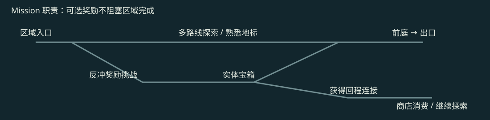
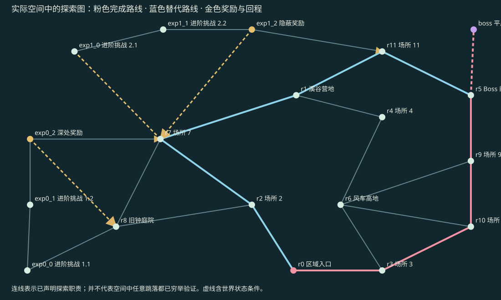

A · 完成路线
下载完整录像 · 程序输入，正常 1 倍速度。C/D 为标明来源时间段的片段；完整录像保留全过程与末尾 1 秒完成画面。
现有 R2 拓扑驱动的真实完整地图：19 个 Macro、27 处直接接缝，三种尺寸；反冲岩岸、分叉汇合、两处实体宝箱、商店与获得奖励后的回程连接。
打开真实 Godot 隔离试玩 · A/D 移动，Space 单跳，鼠标松开反冲，S 下穿，E 购买，M 整图，R 重试。
本轮范围：一张新物理拓扑。25 条冻结整图策略通过，含 12 条独立输入扰动；50 个声明方向全部实际覆盖。人工趣味待评，正式游戏保持原流程。Boss、战役、多 Seed 品质及最终区域规模仍待后续验收。
Map 添加连接地形 0；Module 先生成完整地形，再刚性摆放。主要活动是主动跳跃与反冲；当前内容没有移动平台、齿轮或敌人。地貌与挑战词汇仍需扩充。


独立环秩为 9，只描述图结构，不作趣味评分。两处宝箱腔通过角色身体扩张后的闭门隔离检查；4 个省略奖励射击的普通跳跃替代策略均失败。这些反例不等于穷举所有玩家操作。
| 路线 | 连续耗时 | 射击 | 空中射击 |
|---|---|---|---|
| main | 32.9s | 9 | 9 |
| reward-expedition-0 | 72.5s | 12 | 12 |
| reward-expedition-1 | 79.5s | 18 | 17 |
| alternative-main | 43.4s | 12 | 12 |
| timed-closed-return | 81.5s | 18 | 17 |
上述为正常速度程序策略，不代表人类通关时间。奖励路线完成实际领取；购买调用原 ShopService，未注入金币。
| 配对回程 | 绕行 | 获得的回程连接 | 节省 |
|---|---|---|---|
| 奖励远征 1 | 11.37s | 6.47s | 4.90s |
| 奖励远征 2 | 19.60s | 8.25s | 11.35s |
4 条真实配对实验均通过；每对从同一入口出发，取宝前的实际位置、输入与资源轨迹哈希相同，仅后续回程路线不同。
| 批次 | 需求适配创作 | 已验证版本复用 | 整图复验 |
|---|---|---|---|
| 首次新形状需求 | 19 | 0 | 25/25 |
| 同图再次拼装 | 0 | 19 | 13/13 |
19 个版本进入隔离候选库；通用端口状态关系仍为 UNKNOWN，人工认可和生产准入均为 0。当前创作适配已有关系原型，尚不支持任意自然语言创意。复用批次使用同一地图，不能算第二张随机地图。
下载完整录像 · 程序输入，正常 1 倍速度。C/D 为标明来源时间段的片段；完整录像保留全过程与末尾 1 秒完成画面。
下载完整录像 · 程序输入，正常 1 倍速度。C/D 为标明来源时间段的片段；完整录像保留全过程与末尾 1 秒完成画面。
下载完整录像 · 程序输入，正常 1 倍速度。C/D 为标明来源时间段的片段；完整录像保留全过程与末尾 1 秒完成画面。
下载完整录像 · 程序输入，正常 1 倍速度。C/D 为标明来源时间段的片段；完整录像保留全过程与末尾 1 秒完成画面。
复用原 R2、Mission/Exploration、CP-SAT、Module 标准输出、CandidateLibrary 与真实 Harness。区域规则目前为受支持的结构化子集；布局反馈已能处理奖励空间被占、端口净空和实际下穿条件等失败。生成和物理认证仍为离线流程，Runtime 延迟未据此签署。
结构化结果与保留失败索引 · 视频可以直接在聊天按 A/B/C/D 反馈，无需填写表单。